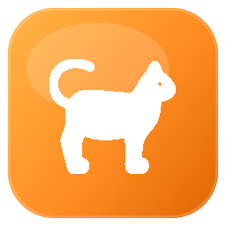

AppCat · runtime audit
Стабільність без фонового податку
Аудит виявив три P1-ризики та зайвий idle CPU. PR #37 усуває підтверджені дефекти.

2 серпня 2026Метод
Це не припущення зі static review
160
файлів у корпусі
Lifecycle, picker, AX/CG, storage, network, caches.
257
headless unit-тести
Поточний PR: 0 failed. Xcode analyzer — без diagnostics.
LIVE
runtime evidence
top, sample, ps, leaks на DEV-процесі.
P1 · picker race · виправлено
Гонку показу picker усунено
Що бачить користувач
Перше натискання — нічого. Друге лише очищає stuck state. Показ може вимагати третього.
×3
натискання замість одного
Реалізоване виправлення
Один snapshot owner. Жодного загубленого completion
- 01Single-flight enumeration
Нова utility-робота не запускає паралельний AX pass. - 02User demand має пріоритет
Picker request не можна supersede фоновим poll. - 03Completion вирішується рівно раз
Навіть cancellation має визначений результат.
Definition of done
1×
Picker з’являється після першого activation.
P1 · data loss · виправлено
Перезапис пошкодженого config усунено
Missing file і unreadable file мають однаковий результат: nil.
Ризик
Тиха, незворотна втрата user-owned configuration.
Реалізовано · відновлення без руйнування
Помилка читання — це не дозвіл перезаписати файл
.missing
Лише тут можна seed + save defaults.
.failed
Зберегти або quarantine файл. Reset — тільки явно.
P1 · network side effect · виправлено
GET до вибору користувача прибрано
Byte cap цього не виправить
Навіть 1 байт відповіді означає, що endpoint уже викликано.
GET
перед user intent
Безпечний маршрут
Спершу рішення. Мережа — лише коли вона справді потрібна
Title enrichment не вартий дублювання одноразового чи tokenized URL.
Якщо enrichment залишиться
Лише explicit user action, ephemeral session, incremental bytes і hard cap.
Measured idle CPU
Кожні п’ять секунд AppCat повторює дорогий refresh
5s
На main actor перебудовується список apps та завантажуються icons.
Паралельно запускається повний AX/CG window scan. Cancellation не зупиняє sync IPC.
Memory verdict
Витоку AppCat не знайдено. Не варто лікувати фантом
17.8K
leaked bytes — лише Apple Link/AppIntents XPC cycles, без AppCat frames
Є bounded picker cycle та зайві full-resolution icons. Це optimization, не доказ runaway leak.
Друга хвиля
Зелені тести не покривають дані, exit і реальний WindowServer
P2 · data integrity
Failed launch рахується як success
History, stats, suggestions і usage оновлюються до підтвердження open.
P2 · main actor
Shortcut file читається повністю
Великий .webloc / .url може зависити routing.
Test gaps
Немає системного доказу
Interleaving, immediate quit, Accessibility IPC, fullscreen visibility.
Рекомендований порядок
Спочатку довіра. Потім виміряна ефективність
- Не перезаписувати invalid configF-13
- Зробити snapshot single-flightF-01 + F-03
- Повторно використовувати незмінні iconsF-02
- Прибрати pre-choice metadata GETF-09
Критерій готовності
Picker — з першого разу.
Налаштування — без тихої втрати.
Idle — без 5s CPU pulse.